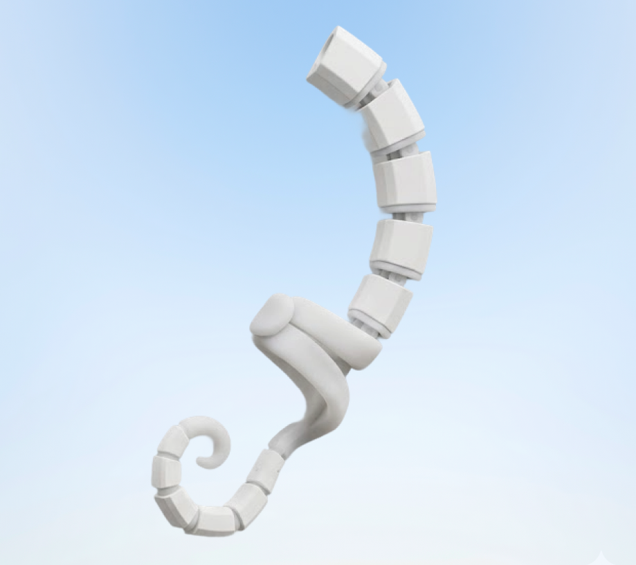
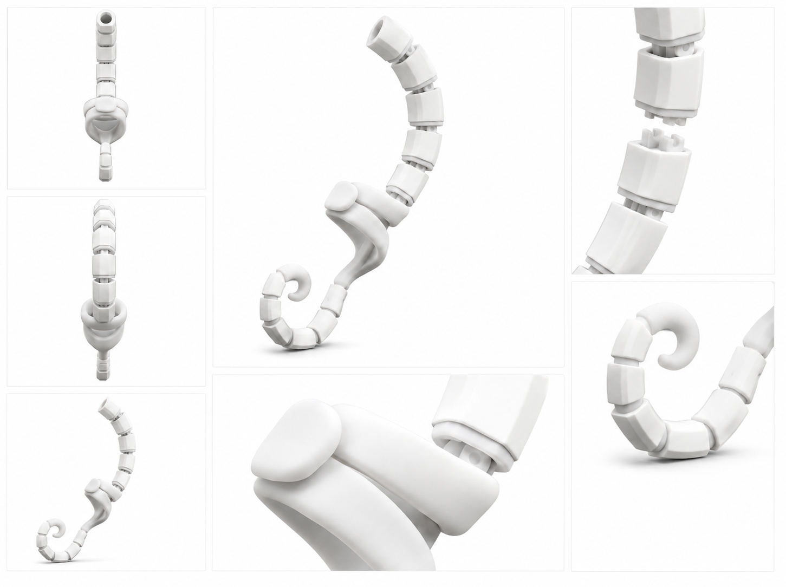
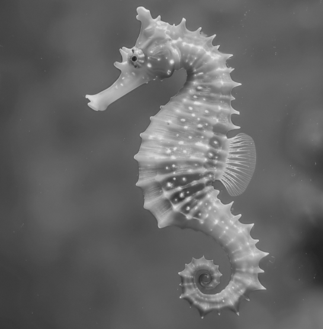
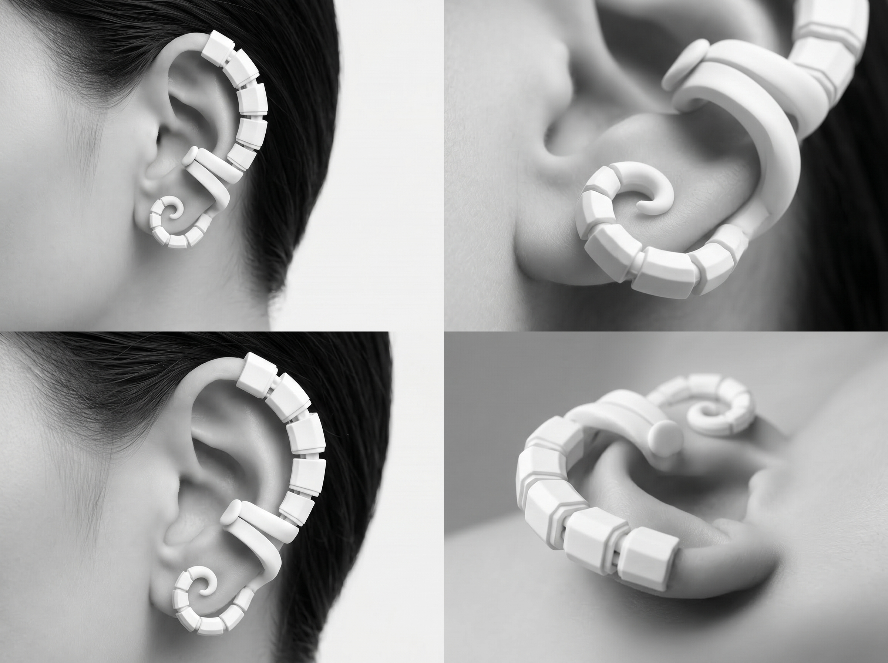
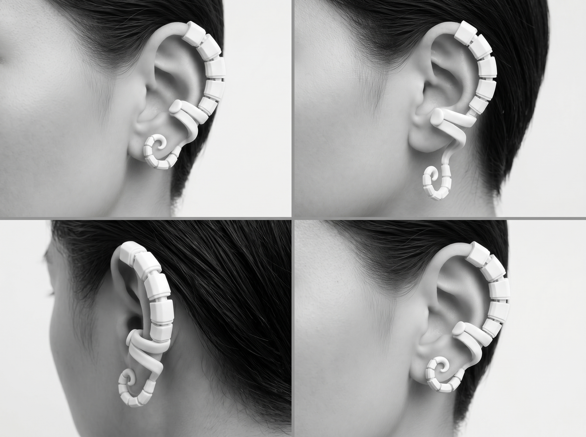
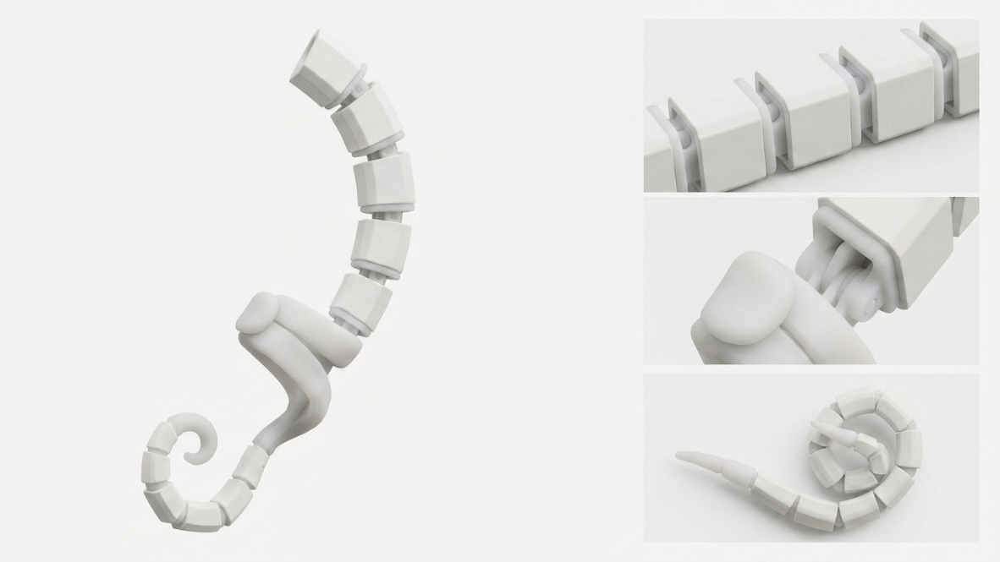
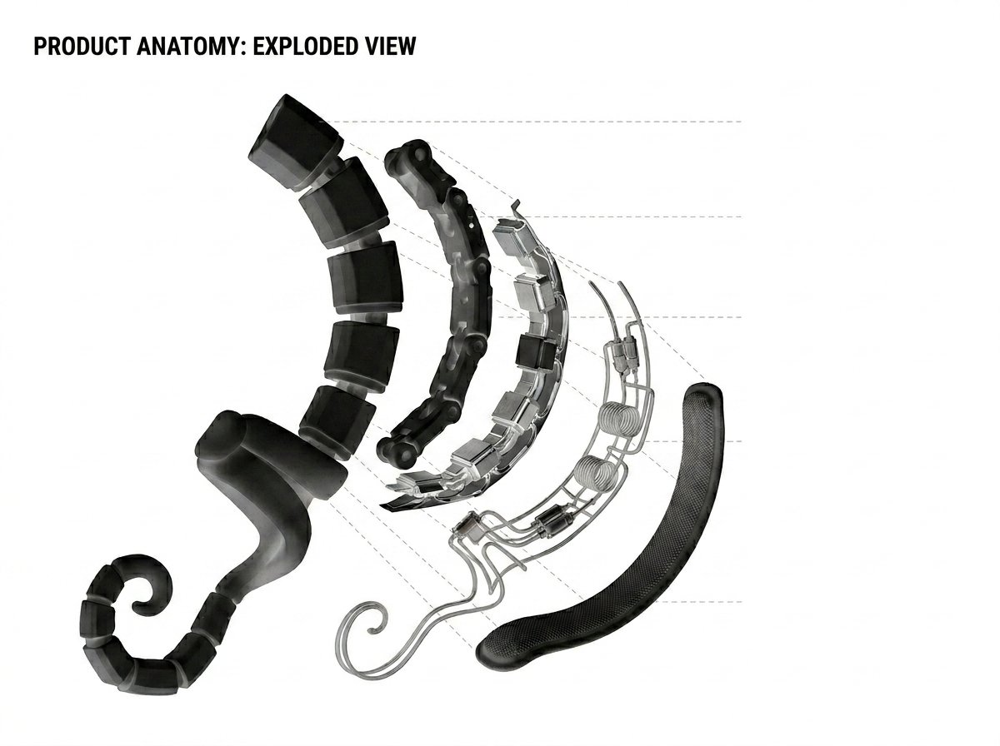

오피스 트라우마 순간을 위한
오피스 웨어러블 액세서리
CTRL KEY는 직장 내 예상치 못한 호출, 피드백, 긴장의 순간에 사용자의 상태를 전환하는 이어커프형 웨어러블 액세서리입니다.
감각 기반 그라운딩 기술을 통해 생각이 아닌 몸의 감각으로 현재의 안정감을 되찾도록 설계되었습니다.
detail


Office wearable accessory for sensory reset.

01
Design Language

Inspired by Seahorse Tail Structure
해마의 꼬리는 단순한 곡선이 아닌,
외부 환경 속에서 스스로를 지지하고 균형을 유지하는 구조다.
CTRL KEY는 그 형태를 재해석하여 귀를 감싸고 안정적으로 고정되는 구조로 발전시켰습니다
02
Structural Design
이어커프 구조
귀의 곡선을 따라 자연스럽게 감싸는 구조는 별도의 고정 장치 없이 안정적인 착용감을 제공합니다.
유기적인 곡률과 접촉면 설계를 통해 착용 자체가 하나의 감각적 신호가 되도록 디자인되었습니다


03
Sensory Grounding System
CTRL KEY는 화면이나 알림이 아닌
신체 감각을 통해 사용자의 상태 변화에 접근합니다. 압력, 온도, 진동, 호흡 리듬을 활용하여
트우마의 순간을 현재의 감각으로 전환합니다

Modular Fit System
귀에 맞춰 조립되는 모듈형 구조
CTRL KEY는 사용자의 귀 형태와 착용 위치에 맞춰 파츠를
더하거나 줄일 수 있는 모듈형 이어커프 구조입니다.
반복되는 세그먼트와 유연한 조인트는 해마 꼬리의 분절구조
처럼 움직이며, 다양한 귀 곡률에 자연스럽게 대응합니다.

Flexible Folding Structure
CTRL KEY는 착용 시 귀를 따라 길게 감기며 안정적으로 고정되고, 사용하지 않을 때는 작은 형태로 접혀 보관됩니다.
해마가 꼬리를 말아 스스로를 지지하듯, 제품 역시 감기고 접히는 움직임을 통해 기능과 형태를 동시에 완성합니다.
04 Product Anatomy
작은 이어커프 안에는 감각 경험을 만드는
여러 레이어가 결합되어 있습니다
외부 쉘, 피부 접촉층, 센서 모듈, 감각 출력 구조가
하나의 조형 안에서 작동하도록 설계되었습니다

05 Material Design
CTRL KEY는 의료기기가 아닌 매일 착용하는 액세서리 경험을 목표로 합니다.
부드러운 촉감의 소재와 정제된 표면 마감으로 기술이 드러나기보다 자연스럽게 생활 속에 스며들도록 디자인했습니다.